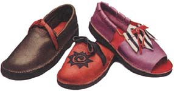
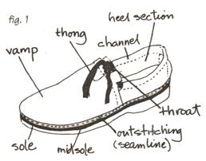
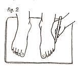
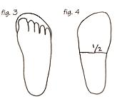
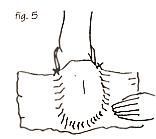
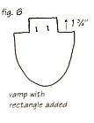
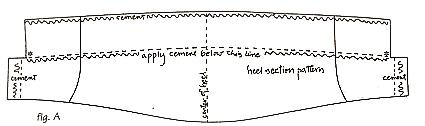
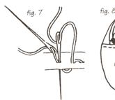
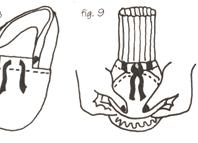

Issue # 178 - February/March 2000
A step-by-step guide to becoming self-shod.
The shoes I make are of soft leather, low-heeled and "outstitched," meaning that the leather forming the upper bait of the shoe turns out upon meeting the edge of the midsole and the stitches joining these two pieces are visible around the perimeter of the shoe ( figure 1 ). I make a variety of styles, including the one described here - a simple slip-on, with a thong that's laced through a channel around the foot opening to keep the shoe snug.
Materials needed include a piece of leather, some sort of soling, synthetic heavy-duty thread and Barge or rubber cement. If you can find a pocketbook or other article made of leather at least 1/6" (4-5 iron) thick and large enough to accommodate the pattern pieces, it can be reused to make your shoes. If you need to buy leather, you'll have to purchase half a cowhide, as leather is sold by the side (be sure to get chrome-tanned).
You can purchase natural rubber soles (they can be cut with scissors); make soling from a nonradial-belted tire (cut tire into sections slightly longer than your shoe sole with a utility knife, then cut your sole out on a band saw); use vegetable-tanned leather for your sole; or purchase synthetic rubber soling from your local shoe repair person and consider having him or her apply it as well.
You'll also need leather-cutting scissors, a stitching awl or two big-eye needles, a chisel and a hammer or rubber mallet. If you choose thick leather, you may want to use a skiver (a knife which uses disposable razor blades) to thin the thong channel as well as the insides of the vamp and heel sections where they overlap.
If you opt for leather or synthetic rubber soling, you'll need a band saw for cutting, as well as a belt sander for smoothing the edges. Leather soling can also be cut with a chisel and mallet or a knife, then smoothed with sandpaper. If you leave this operation to your shoe-repair person, you can skip the saws and sanders.
The shoe at left is made of three main pieces: the midsole, which is the part your foot stands on; the vamp, which covers the front half of your foot; and the heel section, which encloses the rest of your foot.
To make the midsole pattern, stand on a thick piece of cardboard with your weight equally distributed and have a friend trace the outline of both feet ( figure 2 ). Step off and add about 3/4" for toe room to each foot pattern ( figure 3 ). Decide if you want both of your shoes to be the same or if you want each customized. If you want them the same, cut out one pattern, turn it over and draw it superimposed upon the other. Create a merged pattern that is as wide as the widest parts of your feet and as long as the longest parts of your feet. Measure your midsole pattern(s) from heel to toe, and make a line across at the halfway point ( figure 4 ).
To make the vamp pattern, cut a piece of aluminum foil big enough to cover the front half of your foot. Stand on your cutout midsole pattern(s) and put a bit of padding in front of your toes to allow sufficient space in this area. Fold one edge of the foil to make it straight, then have a friend place it over your foot, aligning the straight edge with the halfway line on the midsole pattern ( figure 5 ). Smooth the foil, then make a crease where it touches the sides of the midsole pattern and mark it. Copy the vamp pattern onto cardboard and add up to 1/8" for seam allowance to the curved seamline. Also draw in a rectangular piece at the center of the vamp throat: the short sides should be 1 3/4" while the long sides should equal the length of the throat, minus two times the height of the end of the heel section that attaches to the vamp ( figure 6 ).
Next, make die heel pattern. Measure the distance from the heel to the toe of your midsole pattern to find the length the heel section should be between the two asterisks as shown in figure A. Use a copy machine to reduce or enlarge the heel pattern ( figure A ) until it equals the length you need.
Cut two thongs about 3/8" wide and 24" long. Cut your pattern pieces out of leather, marking the halfway point on the midsoles (flip pattern over for second shoe if you're making both the same). Use a chisel to make two slits for the thong in the rectangular section of the vamp ( figure 6 ).
The channel around the top of the heel section is stitched first-with the thong in it. Spread rubber or Barge cement along the top edge of the channel and along the other glue line (see figure A) and let dry. Place the thong in the channel, good side down, then press the channel closed. Use your stitching awl or a long piece of heavy thread with a needle at each end to stitch the channel. Make stitching holes with an awl before using either technique, placing a piece of rubber below the leather as buffer. When using two needles, pull the thread halfway through the first hole; then, through tile next stitching hole, push one needle down and the other needle up. Give a little tug, then continue stitching (figure 7). When done, cut the thread and tie a square knot; with a match, melt the knot and press it flat with a chisel.
Now attach the vamp to the heel section (figure 8). Spread a line of cement about 1/4" wide along the inside of the vamp throat and on the inside of the long edge of the rectangle. Also spread cement on the outside of the ends of the heel section. When it dries, insert the ends of the thong through the slits in the rectangle, then press the rectangle closed around it. Press the cemented ends of the heel section against the cement on the vamp throat. Stitch along the throat, using the stitching method described above.
Next, the upper gets attached to the midsole (figure 9). Apply cement just inside the outline of your midsole and to the seamlines of the vamp and heel. Let it dry, then press the area where the heel section and vamp are joined to the midsole at the halfway points. Adhere the heel section to the midsole. To adhere the vamp you'll need to gather it, since its seamline is longer than the space available for gluing it onto the midsole. Stuff a sock and put it into the shoe to give some shape to the vamp. Attach the midsole and vamp at the center of the toes, then at the sides of the ball of the foot. Keep adhering the center of each uncemented section until the seamline of the vamp is smoothly cemented to the midsole.
Make stitching holes all around the seamline of the shoe, then stitch using your awl or the two-needle technique.
If you are attaching the soles yourself, sand the upper surfaces first, then apply Barge cement (in a well-ventilated area or outside) to the top of the soles and the bottom of the midsoles. When dry, press them together, then pound to seal the bond.
Cut off the excess soling, sand the edges, then immerse your shoes in warm water and stuff them with paper towels until dry. Try on your shoes and complete them by tying the thong with a square knot and fringing the ends if you like.
There are many ways to vary this pattern. Make the vamp open-toed with decorative openings on the side. Make the slits for pulling the ends of the thong through on the side or at the heel. Eliminate the heel section and make a scuff. With practice, you'll be able to make everything from flip-flops to hip boots by improvising on this pattern.
We needyour Country Lore ideas! Send its your tips and hints to "Country Lore, " c/o Mother Earth News P.O. BOX 129, Arden, NC 28704 or to letters@motherearthnews.com .
RESOURCES:
LEATHER: Seigel of California: order "chink chap" and an Osborne Stitching awl (800) 862-8956
OTHER TOOLS & MATERIALS: Berman's Leathercraft (617) 357-8564
NATURAL RUBBER SOLING: Shreiner Company:"Starpath blocker, Size 12" (330) 276-6135
BOOK, VIDEO, MATERIALS, WORKSHOPS: Sharon Raymond, 145 Baker Road, Shutesbury, MA 01072; (413) 259-1748; raystar@valinet.com
|
 |
 |
 |
|
 |
 |
 |
|
 |
 |
 |